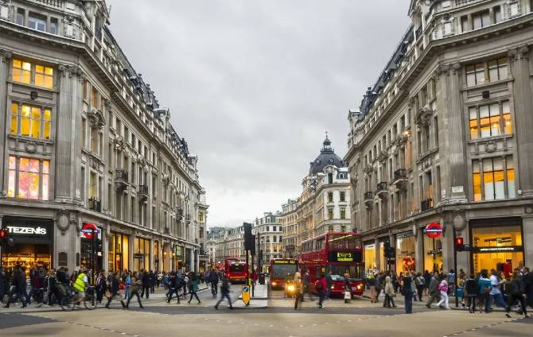
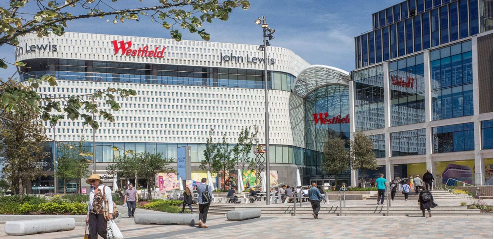
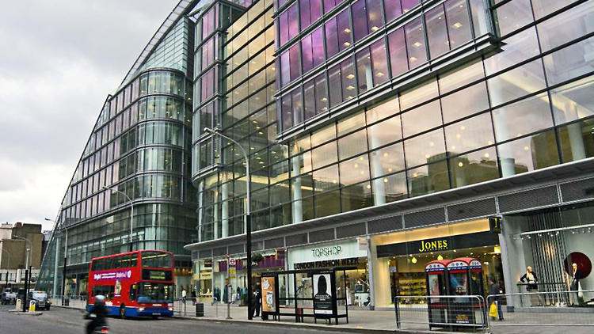
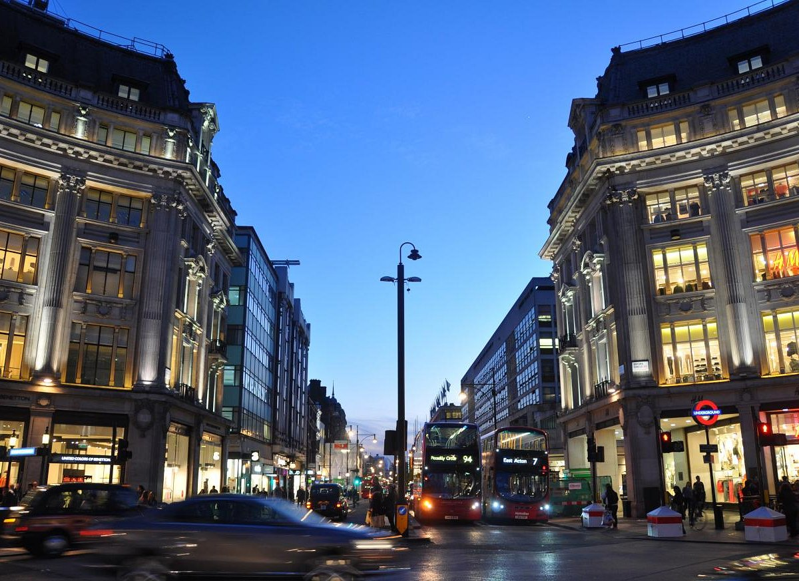
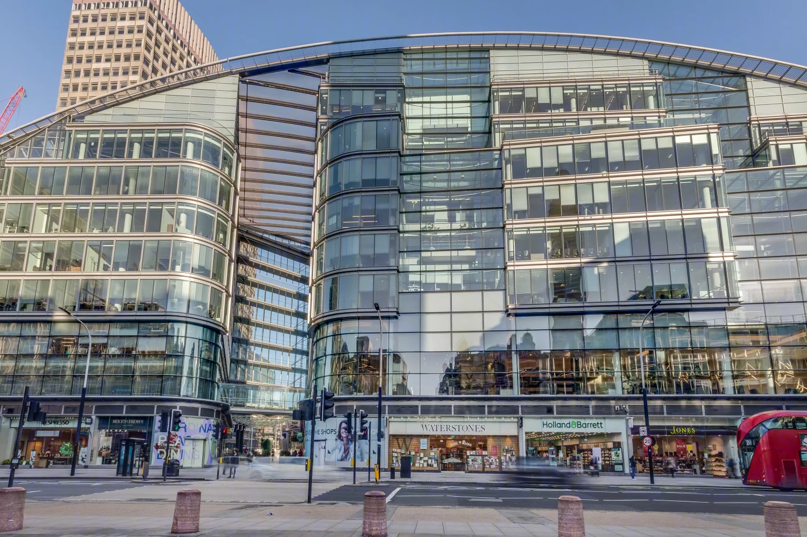

EXPLORE LONDON
GUIDE TO ENJOYING YOUR VISIT ACROSS THE POND
Shopping in London
|  |


|
|---|
London is the perfect city for those who enjoy shopping. With a combination of high-end stores, department stores, marketplaces, and botiques, shoppers are bound to leave the city with a handful of goods that they will love for a lifetime. With places like Oxford Street, Bond Street, or Camden Market, people are bound to find something unexpected that they will enjoy.
Oxford Street
Oxford Street is considered to be one of the busiest shopping areas in London. It is located in the West-end and spans across 1.5 miles. The area is packed with over 300 shops to choose from, and each one gives tourists a healhy mix of luxury, department goods, beauty, and nice places to eat. In addition to its retail value, Oxford Street is known for having a warm and cozy seasonal appeal because of their grand Christmas light display during the holiday season. The area's lively atmosphere and modern architecture are what make it such a treat for all who come to visit. Another great feature of the area would be its proximity to one of London's largest transportation systems. Tourists can use the city buses, taxis, as well as the central Underground Station. This station makes it easier to get to other popular areas such as Bond Street or Soho.
Primark
Primark is the perfect shop for teens and young adults to get fashionable items for affordable prices. The shop has a wide range of casual and dressy footwear, shirts, pants, dresses, sweatshirts, sweatpants, alongside a wide range of accessories, home decor, and beauty items. Shoppers can expect to find these items for relative low prices, some items even costing as little as £6.00.
Selfridges
Regarded as one of the world's best department stores, Selfridges spread of luxury items draws in crowds from all over London. Catered to men, women, and children, Selfridges is a great location to find many unique name-brand items that tourists are bound to love. Clothing is not the department store's only strong point. Selfridges has select areas that showcase some fo the most recent and advanced items in technology, watches, and fine jewelry.
AllSaints
This British brand provides shoppers with a more edgy and contemporary style. Catered to both men and women, AllSaints carries clothing items such as leather jackets and denim pieces that help bring the contemportary aesthetic together. The distressed textures, dark tones, and complex stitching on the clothing items help showcase the rock-and-roll influence they are trying to emulate. AllSaints is the perfect destination for those who feel like trying a more versatile way of dressing.
John Lewis
John Lewis offers shoppers an array of different luxury-brand items such as clothing, electronics, beauty products, and home decor. In addition to these brands, John Lewis also has items that sold exclusively by them. This store is catered to men and women, and the fashion items range from things such as clothing, shoes, and accessories. The home decor department gives shoppers access to large pieces of furniture, bedding, kitchen items, and other small trinkets that can help light up a home. It is highly regarded for having a warm atmosphere due to the attentive and kind staff, making it a relaxing and worth-while experience.
Victoria Street
Victoria Street is recognized for having a healthy blend of shopping, dining, and entertainment for those who are exploring in London. Because of its proximity to Victoria Station, it is often flooded with both locals and tourists. The area is filled with a variety of department stores, retail chains, botiques, and speciality shops for tourists to choose from. These location provide tourists with clothing, souvenirs, home goods, and groceries. There are also a string of different restaurants and cafes for tourists to rest and recharge in as they continue to explore the area.
The Body Shop
The Body Shop is a beauty and skincare company that sells cruelty-free products. These products, which are sourced sustainably, consist of haircare, skincare, bath, and makeup items. The staff is well trained in order to pair customers with the products that match their needs and will benefit them positively in the long run. In addition to their product sales, The Body Shop is very vocal in their activism for a wide range of environmental issues.
House of Fraser
House of Fraser is a department store that sells a wide range of clothing, electronics, household items, decor, and beauty products. The store's modern layout makes it very easy for customers to navigate their way through the building and find the items that they are looking for. They are best known for their fashion department, which is catered to men, women and children, and consists of many popular British and international name-brands. The House of Fraser team is always ready and willing to assist shoppers in helping them find unique items that will pair well with other items they have come across in the store, which combines convenience and quality for consumers.
Sainsbury's
Sainsbury's is a large grocery store that is often very popular amongst both locals and tourists. The shop provides consumers with a large range of grocery items, household items, sanitary products, and other items of immediate convenience. In addition to carrying many popular grocery brands, Sainsbury's has their own line of name-brand products that are available in their stores. Each aisle is clearly and properly labeled, which makes it very easy for shoppers to find exactly what they are looking for.
Paperchase
Paperchase is a popular stationary shop located in the heart of Victoria Street. Here, shoppers can choose from many different gift cards, letters, stamps, office essentials, and stationary that are extremely high in quality. It is also the perfect place to get eccentric gifts, wrapping paper, and seasonal items, which can make great presents for friends and family. Whether you are looking for an exiciting present or a new way to orgranize the office, Paperchase is a must-see during a shopping spree.
Leadenhall Market

Leadenhall Market is an iconic and historic marketplace that dates back to the 14th Century. It is well known for its breathtaking Victorian architecture, as well as its beautiful mix of restaurants, shops, cafes, pubs, and services. Aside from its beauty, Leadenhall Market is recognized by some as a filming location for the Harry Potter movies, where the business district was used for the backdrop of Diagon Alley. Ultimately, the area's modern charm and historic elements make it an area of profound interest and comfort for all those who go and visit.
Askinology
Askinology takes a brand new approach to addressing skincare. It incldies Britain's first facial bar, as well as a laser and aesthetic clinic to address the many topical needs of their customers. Additional services provided by Askinology include laser-hair removal, injections for anti-aging, facial serums, and much more. Customers will leave feeling completely rejuvenated and like a brand new person.
Cell Smash
Dropped your phone while walking on the busy streets of London? Cell Smash it the perfect place to take your damaged electronics to. The employees at Cell Smash are well equipped to fix all types of electronics that have experienced all types of damage. Some of the damages they specialize in the most include liquid damage and data recovery. In addition to these services, Cell Smash also sells bluetooth devices, chargers, phone cases, and screen protectors that fit a wide range of devices.
Hobbs
Hobbs is a British womanswear shop that provides women with comfortable and stylish clothing options to wear while they are on-the-go. The attention to detail is evident in each dress, tailored suit, coat and accessory, which give off a sense of refinement. In addition to clothing, Hobbs also sells shoes and handbags, making it the perfect location for women to get all of their clothing essentials in one go.
Windsor Flowers
Windsor Flowers is a family-owned business that prides itself on creating unique and meaningful floral arrangements that touch the hearts of each of their loyal customers. The company, which was founded in 1982, makes floral arranged for contracted services and events. Whether it is a small event, big weddding, or a birthday celebration, their mission is to deliever the most fresh, fragrant, and visually appealing boquets that will bring smiles to the faces of their customers.
Westfield London
Westfield London is one of Europe's largest shopping malls. The shopping center, which spans over 2 million square feet and contains over 300 stores, offers customers with an extensive array of retail and luxury brands to choose from. It contains stores such as H&M, Nike, Adidas, Louis Vuitton, and Prada. It is also equipped with a movie theater, bowling alley, and plenty of dining options. The spacious mall is often quite busy, as it is a popular hub for all in London. It perfectly encapsulates the concept of shopping, food, and entertainment all in one giant building.
Carlton London
Carlton London is a fashion store catered to both men and women, and sells a wide range of clothing, home goods, accessories, travel necessities, perfumes/colognes, kitchen essentials, and much more. The company is known for its modernity, all while still being able to hold on to more classical styles. One of the highlight items from the store would be its shoes. They offer a wide variety of shoes ranging from casual to formal. No matter the occasion, Carlton London has items that cater to the styles of all their customers.
Clarendon Fine Art
Clarendon Fine Art is a art gallery that displays a wide array of modern and contemporary art. This location is a small part of a much larger chain of galleries, and their atrwork ranges from mediums such as paintings, drawings, sculptures, and prints. Claredon Fine Art makes it their mission to ensure that both well-known and rising artists get the opportunity for the pieces to shine in the gallery.
Hamleys
Hamleys is the perfect location for both children and toy collectors. This lively toy store carries items from some of the most famous toy brands in the world. The store spans across multiple floors, making it a treat for those who enjoy toys, video games, board games, and much more. There are interactive displays and live demonstrations that show how specific products work, which makes it a huge hit among families. Hamleys also has their own line of unique products which can make lovely souvenirs.
JD Sports
For those who love sportsweat and streetwear, JD Sports is the perfect place to visit. They are recognized for their wide range in athletic-brand clothing and shoes from brands such as Nike, Adidas, Jordans, and much more. In addition to that, they carry items that are perfect for all types of athletes, such as football jerseys, training gear, and running shoes. Ultimately, whether shoppers are preparing to play in a match or just looking for something sleek and fresh to add to their wardrobes, JD Sports will have exactly what they are looking for.